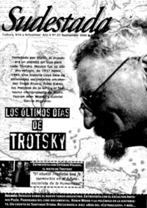

Buscar
Robin Wood: luces y sombras
Prolífico narrador de aventuras, buque insignia de la influyente editorial Columba durante décadas en el país, la figura de Robin Wood ha alcanzado dimensiones paradigmáticas en la historieta local. Aquí, dos visiones contrapuestas sobre su obra. Una, que remarca aquellos aspectos críticos en sus guiones, ciertas temáticas tergiversadas y «occidentalmente correctas». Dos, que subraya la relevancia de la enorme cantidad de personajes que Wood envió a las ojos de miles de argentinos y que, a su modo, marcaron una época.
Edición N° 52
Septiembre 2006
Revista bimensual
Comprar edición impresaSumario
- Los últimos días de Trotsky
- Lejos del panfleto, cerca del debate
- Tango joven de vanguardia
- Nace un nuevo cine documental argentino
- Robin Wood: luces y sombras
Compartir Articulo
1-Del lado de los poderosos
"Es noche cerrada. En medio de la oscuridad se distingue un tren, detenido en medio de la nada, como una sombra extraña en la nieve infinita. Dos guardias murmuran por lo bajo, apoyados en sus fusiles, acurrucados alrededor de una pequeña fogata. Éstos cuchichean en la oscuridad, mientras alrededor, el resto del convoy dormita...un soldado gime en sueños...otro tose dificultosamente...
-¿Sientes el aire? Pronto llegará el frío... ¿qué ocurrirá entonces? Ya es malo luchar con el calor, pero cuando caiga la nieve será el infierno...-dice el primero, con mirada apesadumbrada.
-A nosotros no nos concierne discutir eso, camarada. Nosotros simplemente obedecemos. Y ya sabes lo que ocurre con el que duda -afirma el segundo, amenazante, con la mirada clavada en los ojos de su compañero.
El primero levanta la cabeza, temeroso -Yo nunca he dudado, camarada, lo juro por di...lo juro -responde por lo bajo, mirando hacia ambos lados, tratando de descubrir la sombra de algún superior en medio de la noche... se escucha sollozar a alguien... otro gruñido se pierde en la noche".
Kosakovitch y Connors
Allá por principios de los años 90, Robin Wood escribió una serie, con dibujos de García Durán, que duró aproximadamente cuarenta capítulos. Las aventuras de dos simpáticos mercenarios (si eso es posible) llamados Kosakovitch y Connors aparecieron en la revista Dartagnan, de editorial Columba, manteniendo una larga tradición de héroes solitarios (los mercenarios, tema recurrente en Wood, que en los '70 realizó una serie del mismo nombre).
Las andanzas de estos dos personajes, un polaco de sangre azul medio romántico y un inglés expulsado de la fuerza aérea británica por pendenciero y borrachín, transcurren en medio de las guerras de principios del siglo XX. Desde Palestina, pasando por varios conflictos y guerras civiles en Medio Oriente, incluso forman parte de las huestes de Lawrence de Arabia en su lucha contra los turcos; los avatares de la vida y la sed de aventuras llevan a estos soldados de fortuna hasta la Rusia soviética, inmersa ya en una cruenta guerra civil, acosada por los restos del zarismo y las potencias occidentales que lo apoyaban.
Los dos protagonistas son contratados por los seguidores de la familia Romanov para que los liberaran de las garras bolcheviques, debido a una deuda que Kosacovitch, el polaco, tiene con el depuesto Zar. A medida que se involucran en el conflicto, pasarán rápidamente del compromiso ético (la deuda con el ex-Zar) a tomar partido por él, enfrentando a la Revolución.
El diálogo del primer párrafo pertenece a uno de estos capítulos y es una pequeña muestra del maniqueísmo más simple que sobrevuela esta etapa de la serie, poco sorprendente viniendo de una editorial que no permitía ni siquiera una teta al aire.
Comisarios políticos sanguinarios practicando la violencia gratuita contra los campesinos (hay que reconocer que los blancos, salvo los aristócratas, también hacen lo mismo en estos capítulos), un Trotsky gritón e histérico que amenaza de muerte a medio mundo y un Lenin hablador; y todo esto contrapuesto a un Zar pausado y sabio, cual inocente abuelito, son una muestra acabada de la tergiversación histórica que esconde esta serie, que en otras circunstancias sería tomada en solfa, pero que leída hoy, no causa ninguna gracia.
El intento de liberar al ex-zar Romanov alcanza varios capítulos, en los cuales el lector es testigo del fusilamiento de un buen hombre (que además carga entre sus brazos con un hijo enfermo) y su familia, como si ellos no fueran responsables (¿no fueran responsables, quiénes?) de la situación de miseria y hambre de la población rusa durante el apogeo del zarismo. Tal vez el afán de mantener un público fiel (policías y milicos eran fervientes lectores de Columba) llevó a Robin Wood a cometer estas arbitrariedades literarias.
El abuelo Fedor
En el capítulo quince, "Las enseñanzas del abuelo Fedor", los protagonistas, acompañados por una princesa caída en desgracia (obviamente expropiada), llegan a una pequeña aldea miserable habitada por campesinos, testigos indiferentes de la guerra civil. La sabiduría del líder, un octogenario de bigotes color ceniza, no tiene límite...
(La nota completa en la edición de Sudestada Nº52-Septiembre 2006)
por Ezequiel Rosingana
2-Un Hombre solo
Procurar un abordaje de la obra de Robin Wood es una tarea poco menos que titánica. Todo en la obra, y en la vida, de este guionista cosmopolita parece exagerado, inabarcable, pleno de barroquismos. ¿Cómo hacer para analizar una producción que abarca miles y miles de guiones, que tocan casi todas las temáticas y géneros conocidos? El sello distintivo de Robin Wood pareciera ser una constante inquietud, un sinfín de idas y venidas, marchas y contramarchas, vueltas y revueltas. Podríamos aventurar, por ejemplo, que su escritura se basa en una prosa florida, recargada, con largos bloques de texto que otorgan marco y clima a la acción de la viñeta pero, ¿qué decir entonces de historietas como Merlín, o la actual etapa de Dago, donde los bloques de texto han desaparecido casi por completo, y la cantidad de cuadros por páginas fueron reducidos drásticamente? Wood carga también con esa especie de mantra de ser "el guionista estrella de editorial Columba" (con todas las polémicas y desacuerdos que ha generado esa editorial en nuestro país); pero también lo encontramos escribiendo una historieta para la organización Transparencia Internacional, Isabella, historia de un fantasma, publicada en el Paraguay con el objetivo de denunciar la corrupción existente en ese país. Esta permanente inquietud, esta intencional no-alineación con ningún estilo, género ni corriente de pensamiento es la que genera desconciertos y sospechas entre algunos teóricos, tan caros al encasillamiento: por eso su trabajo ha sido tan criticado y relegado al status de "literatura de folletín", como si para escribir una buena historia se necesitara ser vanguardista. Mientras tanto, Wood gana el Yellow Kid, uno de los máximos galardones que se le otorgan a los historietistas, y a nadie parece importarle...
Es claro, entonces, que la obra de este autor imposible, que a los 12 años trabajaba como obrero de la ruta Transchaco en el noroeste argentino y en los descansos escribía cuentos para concursos literarios (y los ganaba), es un gigantesco poliedro de innumerables aristas. Tomar una de ellas es dejar de lado otras cientos interesantes, diferentes, hasta contradictorias. Pero como el espacio y el tiempo del que disponemos son limitados, vamos simplemente a tratar de definir alguna constante entre las múltiples variables del universo woodiano, y explicar su enorme popularidad entre lectores de distintos segmentos.
Hay algo que nos simplifica la tarea: el propio Wood ha admitido el uso de una misma fórmula para muchos de sus guiones (en rigor a la verdad, ni hace falta que lo diga: cualquier conocedor de su obra sabe que ha escrito tantísimas veces la misma historia). Veamos el caso de Savarese, una de sus creaciones más recordadas: este policial comienza en la Italia de principios de siglo XX, con un pobre niño, Giovanni, desamparado luego del asesinato de toda su familia. Sin nada que perder, se embarca hacia Estados Unidos, donde vive las penurias y sinsabores del inmigrante. Con una flacura y una tristeza magistralmente retratadas por Cacho Mandrafina, el niño persigue un único objetivo: volverse policía como su mejor amigo y terminar con la mafia que asola la empobrecida Nueva York. Savarese es la historia de un paria, un chico que se hace hombre a los tumbos, luchando contra la burla y la indiferencia del mundo, pero también contra sus propias limitaciones, sus propias miserias. Un hombre solo, que saca fuerzas de flaquezas para ganar la próxima batalla, aunque íntimamente sepa que la guerra está perdida...
(La nota completa en la edición de Sudestada Nº52-Septiembre 2006)
Comentarios
Javier Hildebrandt
Ezequiel Rosingana
Articulos más vistos


LIBRERÍA SUDESTADA

Colección infantil

Distribuidora de Libros

Suscripción

Sudestada en URUGUAY

Otros articulos de esta edición
 Dossier
Dossier
Tango joven de vanguardia
Desde hace algunos años, el tango fue sumando a sus filas infinidad de músicos jóvenes. Poco a poco, las nuevas ...
Los últimos días de Trotsky
Derrotado por Stalin, el mundo era un planeta sin visa para León Trotsky. México fue su último refugio, de 1937 ...
Nace un nuevo cine documental argentino
Partiendo de un respeto común por la estética, el sonido, y el guión; un puñado de recientes producciones locales han ...
 Editorial
Editorial
Lejos del panfleto, cerca del debate
Desde el primer número de nuestra publicación intentamos (y no siempre conseguimos), aportar con humildad nuestra voz a un escenario ...